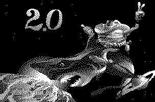

About Spaceward Ho! for Windows 

Original Program Design and Development
Joe Williams and Peter Commons
Delta Tao Software, Inc., Sunnyvale, CA.
Original Programming:
Peter Commons
Artwork:
Howard Vives
Windows Programming:
Steven Ohmert, Presage Software Development, Inc.
Manual:
Richard Espy
Producer/Project Manager:
Mark Caldwell, New World Computing, Inc.